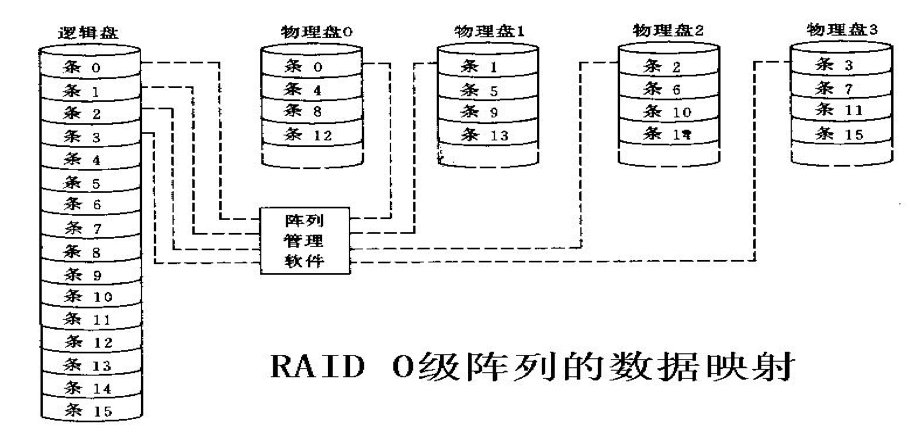
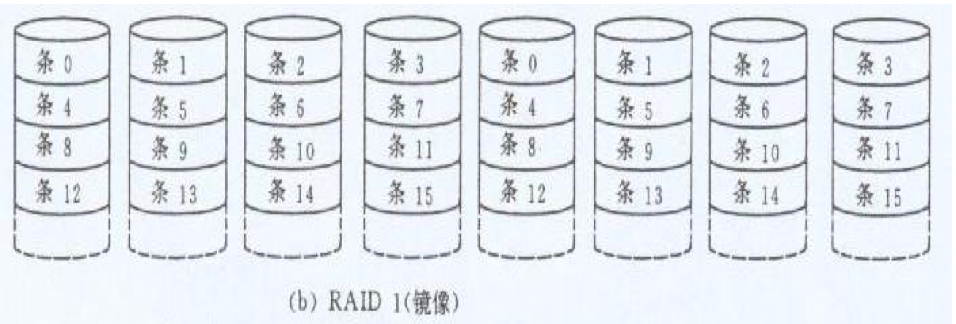
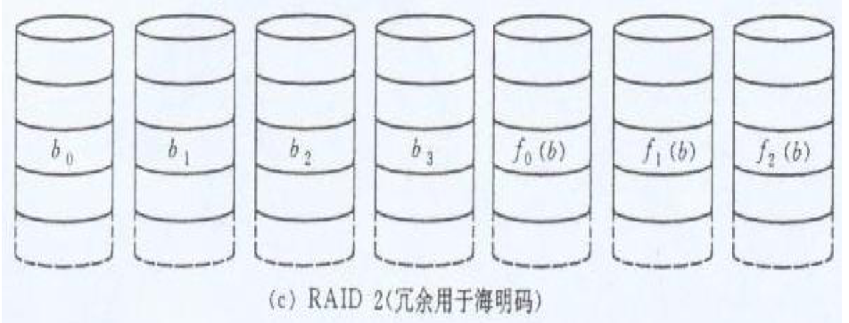
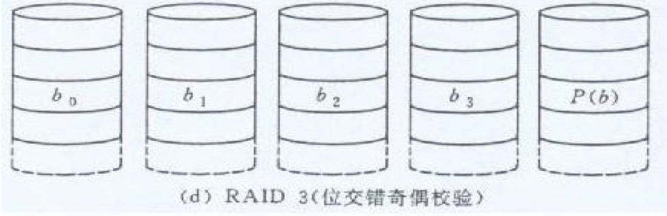
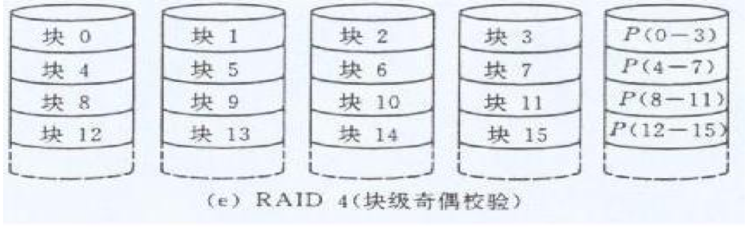
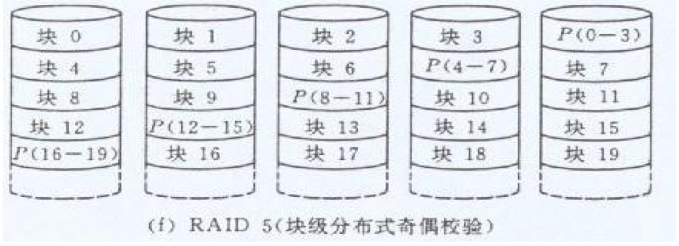

计算机组成原理
一、计算机
计算机发展
- 电子管计算机
- ENIAC：第一台计算机、十进制表示、累加器风格
- 晶体管计算机
- 内存：磁芯存储器
- 外存：磁鼓、磁带
- 变址、中断、I/O
- 出现高级语言
- 中/大规模集成电路计算机
- 微程序、cache、虚拟存储器、流水线
- 超大规模集成电路计算机
摩尔定律：每18个月，集成度翻一番，速度提高一倍，价格降低一倍
计算机硬件
采用”存储程序“工作方式：将程序与数据存入主存中，能不在人为干涉下，逐条取指并执行
EDSAC为第一台存储程序计算机
五大部件
- 运算器、控制器、存储器、输入、输出设备
计算机软件
- 系统软件：有效、安全使用管理计算机的软件和为开发和运行应用软件而提供的软件
- 操作系统、语言处理系统、数据库管理系统、各类实用程序
- 应用软件
计算机系统结构划分
应用
算法
编程
操作系统
ISA 指令集体系结构
微体系结构
功能部件 RTL
电路
器件
翻译程序分类
- 汇编程序：将汇编程序翻译成机器语言
- 解释程序：将语言逐条翻译成机器语言执行
- 编译程序：将高级语言翻译成汇编或机器语言
程序开发过程
- 预处理阶段： .cpp->.i
- 编译阶段：对预处理后的文件编译，生成汇编语言源程序文件 .s
- 汇编阶段：对汇编源程序进行汇编，生成一个可重定位目标文件，是二进制文件 .o
- 链接阶段：将可重定位目标文件和标准函数库合并为一个可执行目标文件
计算机性能测试
CPI:执行一条指令所需的时钟周期数 CPI=总周期数/总指令条数
MIPS：(Million Instructions Per Second) 每秒执行多少百万条指令
用基准程序
计算机用户
- 最终用户：使用程序完成特定任务(应用层)
- 系统管理员：对系统进行配置、管理维护(操作系统提供的抽象层)
- 应用程序员：使用高级编程语言编制软件的程序员(编程层)
- 系统程序员：设计开发系统软件的程序员(ISA层)
ISA
ISA，指令集体系结构，规定了如何使用硬件，涉及内容：
- 指令集合
- 操作数类型
- 寄存器组结构
- 存储空间的大小与编址方式
- 大端，小端？
- 寻址方式
- 指令执行控制方式，包括程序计数器、条件码定义
性能
- 吞吐率：单位时间的工作量
- 响应时间(执行时间)：从开始到作业结束所用的时间
二、运算
补码溢出
- 最高次高位进位不同
- 和的符号和加数符号不同
E1~移~ + E2~移~ = [E1 + E2]~补~
E1~移~ - E2~移~ = [E1 - E2]~补~
校验
码距d为奇数，可以发现d-1位错，纠正(d-1)/2位错
码距为偶数，可以发现d/2位错，纠正d/2-1位错
- 奇偶校验码距为2，能发现1位错，不能纠错
- 海明校验码距为3，能发现2位错，纠1位错
海明校验(SEC)
n位数据引入k为校验码，需满足：
$2^K \geq 1 + K + n$
- 故障字全0：无错
- 故障字中有1个1：1位校验位错
- 故障字中有多个1：1位数据位错(分组确认)
浮点数加减步骤
- 对阶
- 尾数加减(隐藏位参与运算)
- 规格化
- 舍入(保护位|舍入位|粘位)
- 就近舍入(偶数优先)
- 正无穷向舍入
- 负无穷向舍入
- 朝0舍入
- 判断溢出
加法器
$P_i = X_i + Y_i$：进位传递函数
$G_I = X_i Y_i$：进位生成函数
- 全先行加法器
- 局部现行加法器：将数据分组，组内并行，组间串行
- 多级现行加法器：将数据分组，组内并行，组间并行
字、字长
字：处理信息的宽度，用于度量数据类型大小
字长：整数运算数据通路宽度，反映了计算机的一种处理信息的能力
三、指令系统
指令必须包含(显示或隐含)的内容
- 操作码
- 原操作数或操作数地址
- 结果的地址
- 下条指令地址
指令设计原则
- 指令尽量短
- 要有充足的操作码位数
- 操作码含义唯一
- 指令长度是字节的整数倍
- 合理选择地址字段的个数
- 尽量规整
四、存储器
CS：片选信号
存储器逻辑框图
- 片选信号CS
- 写使能WE
- 读出数据线D
- 片内地址线A
cache
直接映射
主存地址：主存群号+群内块号+块内地址
- 命中率最低
- 关联度最低
- 判断命中开销最小，命中时间最短
- 标记所占空间最小
- 无须替换算法
全相联映射
主存地址：主存块号+块内地址
- 命中率最高
- 关联度最高
- 判断命中时间最长
- 标记所占空间最大
组相联映射
主存地址：主存群号+cache组号+块内地址
- n路：每组的行数为n
关联度
- 关联度越高，命中率越高
- 关联度越低，判断命中开销越小，命中时间越短
- 关联度越低，标记所占的空间开销越小
cache替换算法
先进先出FIFO
最近少用LRU
存储周期
存储器一次读写所需时间
DRAM芯片刷新(一次刷一行)
- 集中刷新(整体刷新一遍)
- 分散刷新(将存储周期分为两部分)
- 异步刷新
磁盘
寻道时间：磁头找到磁道所需时间
磁盘操作流程
- 所有磁头同步寻道(由柱面号控制)
- 选择磁头(由磁头号控制)
- 磁头等待扇区到磁头下方(扇区号控制，需从0扇区开始顺序定位到指定扇区)
- 读写该扇区的内容
磁盘响应时间 = 寻道时间 + 转到指定扇区时间 + 数据传输时间 + 磁盘控制器开销 + 排队时间
磁盘冗余阵列(RAID)
出现原因：CPU、主存发展快、辅存提高慢
- RAID是一组物理磁盘驱动器，但只有一个逻辑驱动器
- 数据分布在一组物理磁盘上
- 冗余磁盘存放校验信息
RAID0
- 无冗余
- 并行发送，I/O响应快
- 数据传输速率较高
不保证可靠性

RAID1
- 实现1对1冗余(直接备份完整一份)
- 读：读定位时间更少的磁盘
- 写：写两次磁盘
可靠性高、价格昂贵

RAID2
- 海明校验生成冗余盘，纠正一位错，检测两位错
- 条区小，传输速率高，但I/O响应差
- 并行读写
- 写操作要同时写数据盘和校验盘
贵(已不再使用)

RAID3
- 奇偶校验生成单个冗余盘
- 条区交叉分布，使用小条区，数据传输速率高，I/O响应差
- 用于大容量I/O请求场合
磁盘可以奇偶校验恢复

RAID4
- 一个冗余盘存放奇偶校验码
- 大条区交叉分布，I/O响应快
- 独立存取技术，每个磁盘操作独立进行I/O响应快
少量写：有写损失，需先读之前数据，才能更新校验
大量写：直接根据新数据计算奇偶校验，无需读原数据

RAID5
- 奇偶校验放在各个磁盘中
- 独立存取技术，I/O响应快
成本低，效率高

RAID6
- 对RAID5的扩展，引入第二种奇偶校验，可靠性很高
- 写入速度慢
RAID7
- 在RAID6基础上，采用Cache，速度有较大提高
五、总线
I/O性能指标
- 吞吐率：单位时间内传输数据量
- 响应时间：响应I/O请求的时间
输入输出系统
解决各种信息的输入输出
- 输入系统：将人感知的信息转化成二进制输入到系统中
- 输出系统：将二进制转换成人能感知的信息
总线分类
- 芯片内总线:芯片内部元件间连接
- 系统总线:系统主要功能部件间连接
- 通信总线:主机与I/O设备间连接
- 数据总线
- 地址总线
- 控制总线
组成
控制线
- clock、reset
- 总线请求
- 中断相关
- 存储器读写信号
- 传输确认
地址线(宽度反映最大寻址空间)
数据线(宽度反映一次传输数据大小)
基本概念
总线裁决：选择哪个设备使用总线
总线定时：确定总线事务每一步的开始结束
设计趋势：点对点、异步、串行
传输方式：
- 突发(发送一个地址后，连续传数据，后续地址默认自增)
- 非突发：一个地址对应一个数据
I/O控制器(I/O接口的职能)
- 数据缓冲
- 错误或状态检测
- 控制和定时
- 数据格式转换
- 与主机和设备通信
I/O设备寻址方式
统一编址：与主存空间统一编址，将主存空间分出一部分给I/O串口编号
独立编址
I/O传输方式
轮询方式
OS主动询问设备状态
程序中断方式
设备通知cpu，中断当前进程
直接存储器访问方式(DMA)
存储设备直接与主存进行数据交换
IN命令：读设备信息到CPU，OUT命令：写CPU信息到设备
中断
过程：中断检测(硬件实现)、中断响应(硬件实现)、中断处理(软件实现)
中断响应条件
- 开中断状态
- 指令执行完(异常无须指令执行完就要处理)
- 有未被屏蔽的中断请求
中断响应过程
- 关中断
- 保护断点与程序状态
- 识别中断源(硬件、软件通过判断优先级识别)
中断处理过程
- 保护现场及旧屏蔽字
- 查明原因
- 设置新屏蔽字
- 开中断
- 处理中断(可被新的中断打断)
- 关中断
- 恢复现场及旧屏蔽字
- 开中断
- 清中断请求
- 返回
DMA
出现原因
- 轮询cpu利用率低，传输效率低
- 中断需响应中断请求，需处理断点、保护现场，开销过大
特点
- 高速缓存和主存间直接传输数据
- 通过DMA控制器控制数据传输
采用请求-响应方式
- DMA控制器优先级比CPU更高
- DMA控制器向cpu发送DMA请求，CPU中断，将总线控制权交给DMA控制器
DMA数据传输方式
- CPU停止法：DMA传输时，CPU脱离总线
- CPU访存受限，主线周期没有充分利用
- 弥补缺点方法：
- 引入缓存
- 周期挪用
- 周期挪用：DMA传输时，CPU让出一个总线事务周期让DMA控制总线，传送完一个数据后立刻释放总线
- 总线切换开销较大
- 交替分时：每个存储周期分为两个时间，一个给CPU，一个给DMA
DMA控制器的功能
- 请求：接收外设发来的”总线请求”信号，并向CPU发送DMA信号
- 响应：cpu响应后，DMA控制器能接管对总线的控制
- 能在地址线给出主存地址，并修改主存地址
- 识别传送方向
- 确定数据个数
- 能发出DMA结束信号
DMA操作步骤
- DMA控制器初始化(软件实现)
- 准备内存
- 设置传送参数
- 启动外设
- DMA数据传输(硬件实现)
- DMA结束处理(软件实现)
六、指令
寻址方式
- 立即寻址：指令给出操作数本身
- 直接寻址：指令给出操作数的地址
- 间接寻址：地址存放存储操作数地址的主存单元地址
- 寄存器间接寻址：地址为寄存器号，其中存放操作数的有效地址
- 变址寻址：指令给出存放基址的地址，偏移量由变址寄存器给出
- 相对寻址：相对PC的地址
- 基址寻址：指令给出存放偏移量的地址，基址由基址寄存器给出
Clock-to-signal 一定大于 Clock-to-Q
指令系统设计风格
按操作数位置
- 累加器型：运算的一个操作数隐含在累加器中
- 栈型：操作数必须来自栈顶
- 通用寄存器型：使用通用寄存器存放数据
- Load/Store型：只有Load和Store指令可以访存
按指令格式复杂程度
- CISC：复杂指令集
- Intel
- RISC：简单指令集
- PowerPC、MIPS、Sun、SPARC、Compaq Alpha
控制信号
- ALUSrc：选择操作数(0:BusB；1:立即数)
- ALUCtr：选择ALU操作类型
- ExtOp：选择扩展类型(1符号扩展)
- MemtoReg：选择输出到寄存器(0:ALU result；1:Mem)
- RegDst：0:Rd；1:Rt
- RegWr：是否写寄存器
- MemWr：是否写主存
- Jump
微指令编码
- 直接控制法(不译法)：微操作码长度和微命令个数相当
- 字段直接编码法
- 字段简介编码法：在字段直接编码的基础上进行压缩，某一字段可以表示多组微命令组，具体为哪一个微命令组需要其它字段给出(垂直型微指令)
七、异常中断处理
异常
内部异常
由处理器内部异常引起的异常，按照发生原因分类：
- 硬故障中断：由硬连线异常引起(电源掉电、存储器线路错误)
- 程序性异常：CPU执行指令时出现的异常(除零、溢出、断点、访问超时、非法操作码、栈溢出、缺页、地址越界)
按照发生异常的报告方式和返回方式不同分类：
- 故障(失效)：引起故障的指令启动后，执行结束前被检测到异常；由特定指令产生
- 自陷(陷阱、陷入)：先将CPU设定为某个特定的状态，在程序执行过程中，当满足一定状态的条件时，执行特定的程序对其进行处理，执行完异常处理后回到下一条指令执行；由特定指令产生
- 终止：指令执行过程中出现了使机器无法继续执行的硬件故障(掉电、线路故障等)，调出中断服务程序重启系统(随机发生)
中断
外部中断
外设完成任务或发生特定事件(打印机缺页、键盘缓冲满等)，会向CPU发中断请求
异常处理步骤
- 关中断
- 保护断点和程序状态
- 识别异常并处理
本博客所有文章除特别声明外，均采用 CC BY-SA 4.0 协议 ，转载请注明出处！